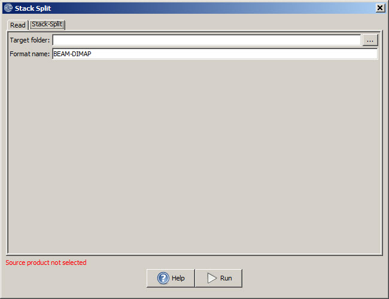

Stack Split Operator
Stack Split operator does the opposite of
what the Create Stack operator does. It separates a given stack product
into each individual master and slave products.
Input and Output
- The
input to this operator is a stack product.
- The output of this operator are individual master and slave products.
Parameters Used
The following processing parameter is required for this operator (see Figure
1):
- Target Folder: The destination folder in which the split master and slave products are saved.
- Format name: The output product format.

Figure 1. Stack Split operator
UI